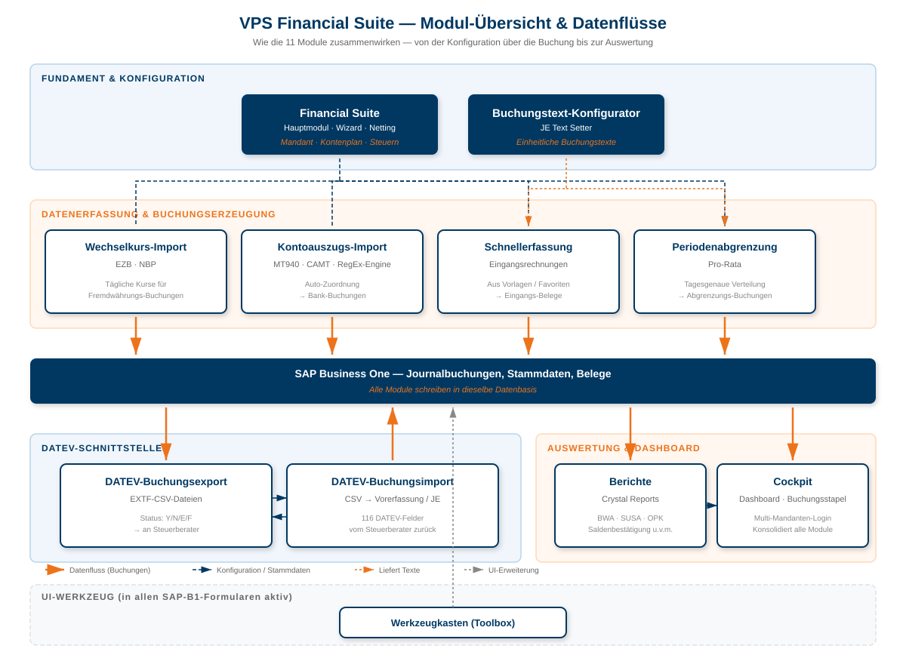

Einführung in die Financial Suite
Die Versino Financial Suite ist eine umfassende SAP Business One Addon-Lösung für die Integration mit DATEV und weiteren Finanzbuchhaltungs-Funktionen. Die Suite besteht aus verschiedenen Hauptmodulen, die nahtlos in SAP Business One integriert sind und über ein gemeinsames Menüsystem zugänglich sind.
Nach der Installation finden Sie alle Funktionen im SAP Business One Hauptmenü unter "VPS Financial Suite".
Willkommen in der Financial Suite Dokumentation
Diese Dokumentation dient als Ihr zentrales Nachschlagewerk für alle Module. Nutzen Sie die Navigation oben, um direkt zu einer bestimmten Anwenderdokumentation zu springen.

Module im Überblick
Die Financial Suite besteht aus 11 Modulen, die nahtlos zusammenarbeiten. Die folgende Übersicht zeigt, wie die Module zusammenwirken:
Konfigurations- und Basismodule
- Financial Suite (Hauptmodul) — Zentrale Konfiguration, Wizard, Netting, Mandanten-/Beraterdaten. Basis aller anderen Module.
- Buchungstext-Konfigurator (JE Text Setter) — Liefert einheitliche Buchungstexte für alle Module (DATEV, Pro-Rata, Reporting).
DATEV-Schnittstellen
- DATEV-Buchungsexport — Buchungen, Stammdaten und Zahlungsbedingungen ins DATEV-Format exportieren.
- DATEV-Buchungsimport — DATEV-CSV-Stapel als vorerfasste Belege oder Direktbuchungen importieren.
Buchhaltung & Auswertung
- Periodenabgrenzung (Pro-Rata) — Tagesgenaue Abgrenzungsbuchungen für Verträge und Lizenzen.
- Wechselkurs-Import — Automatische Kurse von EZB und NBP, stündlich oder manuell.
- Berichtserweiterungspaket — Standard- und Massen-Berichte (BWA, SuSa, Saldenbestätigung u. v. m.).
Banking & Erfassung
- Kontoauszugs-Import — MT940/CAMT-Kontoauszüge mit RegEx-Engine zuordnen und splitten.
- Schnellerfassung-Eingangsrechnung — Wiederkehrende Lieferantenrechnungen aus Vorlagen erstellen.
Werkzeuge & Dashboard
- Werkzeugkasten (Toolbox) — "Alle Zeilen löschen" für jede Matrix-Tabelle in SAP B1.
- Cockpit — Zentrales Dashboard mit Launchpad, Buchungsstapel und Multi-Mandanten-Login.

Technische Voraussetzungen
Stand: Juli 2025
Unterstützte B1 Versionen:
- SAP Business One 10.0 HANA – alle Feature Packs
- SAP Business One 10.0 SQL – alle Feature Packs
- SAP Business One 9.3 wird unabhängig vom Patchlevel nicht unterstützt.
Unterstützte Datenbankversionen:
- MS-SQL Server 2016 oder höher
- HANA 2.0
Unterstützte Betriebssysteme & Frameworks:
- Windows 10, 11
- Windows Server 2016 oder höher
- .net Framework 4.8 / 4.8.1
Downloads
Hier können Sie das vollständige Anwenderhandbuch als PDF-Datei herunterladen.